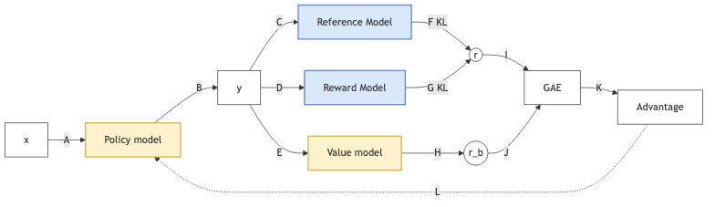
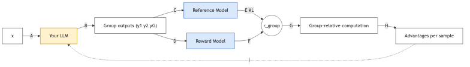

RL
Table of Contents
- 1. Markov Decision Process (MDP)
- 2. Bellman Equation
- 3. Dynamic Programming Iterations in RL
- 4. Monte Carlo Methods in RL
- 5. Temporal Difference
- 6. Policy Gradient
- 7. Actor-Critic
- 8. RL for LLM
- 9. GRPO
- 10. Multi-token training
1. Markov Decision Process (MDP)
- State: the set of states \( S \)
- at a time point, for all parts, how the world looks like.
- State space: at a time point, for all parts, how the world could look like
- Action: the set of actions \( \mathcal{A}(s) \) is associated with state \( s \in S \)
- at a time point, for each parts, what I do.
- Action space : at a time point, for each parts, what I could do
- Reward: the set of rewards \( \mathcal{R}(s, a) \)
- Trajectory
- episode, return: sum of discount return \(\gamma\) in a episode(trajectory)
- State transition probability:
- state transition: at a time point, if I did one operation, what the world is changed to.
- at a time point, if I did one operation, How the world can be changed.
- At state \( s \), taking action \( a \), the probability to transit to state \( s' \) is \( p(s' \mid s, a) \)
- Reward probability: At state \( s \), taking action \( a \), the probability to get reward \( r \) is \( p(r \mid s, a) \)
- Policy
- deterministic & stochastic
- At state \( s \), the probability to choose action \( a \) is \( \pi(a \mid s) \)
Markov property Memoryless property: \[ p(s_{t+1} \mid a_{t}, s_t, \ldots, a_0, s_0) = p(s_{t+1} \mid a_{t}, s_t) \]
\[ p(r_{t+1} \mid a_{t}, s_t, \ldots, a_0, s_0) = p(r_{t+1} \mid a_{t}, s_t) \]
2. Bellman Equation
- Return : summary of all discount return in one complete trajectory
- State Value: expectation of Return for all possiable trajectories \[ V_{\pi}(s) = \sum_{a} \pi(a|s) \sum_{s', r} p(s', r | s, a) \left[ r + \gamma V_{\pi}(s') \right] \] Relationship to action value: \[ V_{\pi}(s) = \sum_{a \in \mathcal{A}} \pi(a|s) Q_{\pi}(s, a) \]
- Action Value: expectation of Return for all possiable trajectories after taking a specified action \[ Q_{\pi}(s, a) = \sum_{s', r} p(s', r | s, a) \left[ r + \gamma \sum_{a'} \pi(a'|s') Q_{\pi}(s', a') \right] \] Relationship to state value \[ Q_{\pi}(s, a) = \sum_{s', r} p(s', r | s, a) \left[ r + \gamma V_{\pi}(s') \right] \]
- Bellman Optimality Equation is bellman equation with the best policy
3. Dynamic Programming Iterations in RL
3.1. Value Iteration
Value Iteration combines policy improvement and a single step of policy evaluation into one operation.
- Initialization: Start with an arbitrary initial value for all states (e.g., \(v_0 = 0\)).
- Iteration:
- Implicit Policy Update: For all states, apply all possible action (Q-table), look ahead to find the best action. \[ \pi_{k+1} = \arg\max_{\pi} \left( r_{\pi} + \gamma P_{\pi} v_k \right) \]
- Value Update: Use that best action to update the state value immediately. \[ v_{k+1} = r_{\pi_{k+1}} + \gamma P_{\pi_{k+1}} v_k \]
3.2. Policy Iteration
Policy Iteration separates the process into two distinct phases. Crucially, the Policy Evaluation phase is itself an iterative process that looks very similar to Value Iteration, but with a fixed policy.
3.2.1. Phase 1: Policy Evaluation (The Inner Loop)
This phase starts with a policy \(\pi\) and calculates its value \(v_{\pi}\).
- Input: The current fixed policy \(\pi_k\).
- Process: We iterate to find the value by performing "Value Updates" repeatedly.
- Initialize a value estimate \(v\) (e.g., \(v=0\)).
- Apply the Bellman Expectation Operator repeatedly (infinite steps): \[ v_{i+1} = r_{\pi_k} + \gamma P_{\pi_k} v_i \]
- Stop when \(v\) converges (i.e., \(i \to \infty\)).
- Output: The converged state-value function \(v_{\pi_k}\).
3.2.2. Phase 2: Policy Improvement (The Outer Loop)
Once we know exactly how good the current policy \(\pi_k\) is (from Phase 1), we make it greedy.
- Process: \[ \pi_{k+1} = \arg\max_{\pi} \left( r_{\pi} + \gamma P_{\pi} v_{\pi_k} \right) \]
3.3. Truncated Policy Iteration
The mathematical connection is defined by the depth of the evaluation step (the number of iterations \(j\) in Phase 1):
- Value Iteration is a special case of Truncated Policy Iteration where the evaluation depth is \(j=1\).
- Policy Iteration is the limit of Truncated Policy Iteration where the evaluation depth \(j \to \infty\).
4. Monte Carlo Methods in RL
Model-free, without to know the model, we use the expecation of example from MC to fine-tune Action value: \(q_{\pi_{k}(s,a)} = E(G_{t}| S_{t}=s, A_{t}=a )\). Basic the process works the same as Policy iteration(Policy evaluation and policy improvement), only the evaluation is with the exampling from MC.
4.1. 1. MC Basic (The Theoretical Baseline)
This is the simplest form, adapted directly from Policy Iteration logic but using sample returns instead of models.
- Theory:
- Operates in strict distinct steps: Policy Evaluation (wait for many episodes) \(\rightarrow\) Policy Improvement (update policy).
- Uses the Initial-Visit Strategy: Only the start of an episode is used to update the value of the starting state-action pair \((s_0, a_0)\). Intermediate steps in the episode are ignored for updates.
- Limitation:
- Low Sample Efficiency: Wastes data by ignoring subsequent state visits in an episode.
- Impractical: Requires collecting "sufficiently many episodes" for every state-action pair before making a single policy update.
4.2. 2. MC Exploring Starts (The Efficient Simulator)
An extension designed to fix sample efficiency but introduces a strong dependency on environment control.
- Theory:
- Data Efficiency: Uses the Every-Visit Strategy (or sub-episode decomposition). One long episode is broken down into multiple "sub-episodes" to update values for every state visited, not just the start.
- Episode-by-Episode Update: Updates the policy immediately after a single episode (Generalized Policy Iteration), rather than waiting for a batch.
- Limitation:
- The "Exploring Starts" Assumption: It requires the environment to be able to start an episode at any random state-action pair \((s, a)\).
- Real-world Friction: This is often impossible in physical reality (e.g., you cannot initialize a robot in a specific "falling over" state instantly).
4.3. 3. MC Epsilon-Greedy (The Practical Solution)
This method removes the unrealistic "Exploring Starts" assumption, making MC methods viable for real-world learning where you cannot control the starting state.
4.3.1. Core Concept: Soft Policies
Instead of forcing the environment to start randomly, we force the agent to behave randomly occasionally.
- Goal: Ensure all state-action pairs are visited "sufficiently many times" without external resets.
- Mechanism: Uses a Soft Policy ( \(\epsilon\) -greedy), meaning there is always a non-zero probability of taking any action in any state.
4.3.2. Exploration vs. Exploitation
The algorithm balances these two conflicting goals via the parameter \(\epsilon\) (epsilon).
- Exploration ( The \(\epsilon\) component)
- Purpose: To discover new strategies and ensure the agent does not get stuck in a suboptimal loop. By taking random actions, the agent eventually wanders into every possible state, fulfilling the coverage requirement that "Exploring Starts" used to handle.
- Mechanism: With probability \(\epsilon\), the agent ignores its knowledge and chooses randomly.
- Exploitation (The \(1-\epsilon\) component)
- Purpose: To maximize rewards based on current knowledge. The agent selects the "Greedy" action (the one with the highest estimated value \(q(s,a)\)).
- Mechanism: With probability \(1 - \epsilon\), the agent chooses the best known action.
- Continuous Learning: Even if the agent always starts at the same spot (Start Line), the stochastic nature of the policy (\(\epsilon\)) ensures that over many episodes, it will eventually drift into unvisited states.
5. Temporal Difference
Core Concept TD Learning is the solution(policy) to the Bellman Expectation Equation, formulated as a root-finding problem and solved using the Robbins-Monro stochastic approximation algorithm.
5.1. The Mathematical Driver
- The Goal: Bellman Expectation Equation We seek \(V_{\pi}(s)\) such that: \[V_{\pi}(s) = \mathbb{E}_{\pi} [ R_{t+1} + \gamma V_{\pi}(S_{t+1}) \mid S_t = s ]\]
- The Problem: Root Finding Define the objective function (Bellman Error) \(J(V)\), where we want the root \(J(V)=0\): \[J(V)(s) = \mathbb{E} [ R_{t+1} + \gamma V(S_{t+1}) ] - V(s) = 0\]
- The Solver: Robbins-Monro Algorithm
Iteratively find root \(\theta^*\) of \(f(\theta)=0\) using noisy observations \(\tilde{f}(\theta)\): \[\theta_{t+1} = \theta_t + \alpha_t \cdot \tilde{f}(\theta_t)\]
- \(\theta\) > \(\theta^*\) minus \(\tilde{f}(\theta_t)\)
- \(\theta\) < \(\theta^*\) plus \(\tilde{f}(\theta_t)\)
5.2. The Derivation
- The Noisy Observation (TD Error)
Since we cannot compute the expectation \(\mathbb{E}\), we take a single sample:
- Observation: \(\tilde{J}(V_t) = (r_{t+1} + \gamma V_t(s_{t+1})) - V_t(s_t)\)
- This is the TD Error (\(\delta_t\)).
- The Sample Target
The term \(r_{t+1} + \gamma V_t(s_{t+1})\) acts as the "Label":
- Reality: \(r_{t+1}\) (Ground truth, low variance).
- Guess: \(\gamma V_t(s_{t+1})\) (Bootstrap estimate).
- Function: It acts as the target \(y\) for \(V(s_t)\), providing a better estimate than \(V(s_t)\) alone because it includes real data.
- The Solution (TD Update Rule) Substituting \(\tilde{f}(\theta)\) into the Robbins-Monro update: \[V(s_t) \leftarrow V(s_t) + \alpha \delta_t\] \[V(s_t) \leftarrow V(s_t) + \alpha \underbrace{[ (r_{t+1} + \gamma V(s_{t+1})) - V(s_t) ]}_{\text{TD Error}}\] \[V(s_t) \leftarrow V(s_t) - \alpha [ V(s_t) - \underbrace{(r_{t+1} + \gamma V(s_{t+1}))}_{\text{Target}} ]\]
5.3. Unified View of TD-series
5.3.1. 1. The General Update Rule
When we use Action value instead of policy for TD, all discussed algorithms can be expressed as a stochastic approximation update solving a Bellman equation. The unified update rule (Gradient Descent form) is:
\[q_{t+1}(s_t, a_t) = q_t(s_t, a_t) - \alpha_t(s_t, a_t) [ q_t(s_t, a_t) - \bar{q}_t ]\]
- \(q_t(s_t, a_t)\): Current Estimate
- \(\alpha_t\): Learning rate (Step size)
- \(\bar{q}_t\): The Target (The noisy sample derived from environment interaction)
- The term \([q_t - \bar{q}_t]\) represents the error to minimize.
5.3.2. 2. Algorithm Specifics
- Sarsa:
- Target Expression (\(\bar{q}_t\)): \[\bar{q}_t = r_{t+1} + \gamma q_t(s_{t+1}, a_{t+1})\]
- Equation Aimed to Solve: Bellman Expectation Equation (BE) for \(q_{\pi}\): \[q_{\pi}(s, a) = \mathbb{E} [R_{t+1} + \gamma q_{\pi}(S_{t+1}, A_{t+1}) \mid S_t = s, A_t = a]\]
- Note: This is an on-policy method using the action \(a_{t+1}\) actually taken by the current policy.
- Q-learning
- Target Expression (\(\bar{q}_t\)): \[\bar{q}_t = r_{t+1} + \gamma \max_{a} q_t(s_{t+1}, a)\]
- Equation Aimed to Solve: Bellman Optimality Equation (BOE) for \(q_*\): \[q_{*}(s, a) = \mathbb{E} [R_{t+1} + \max_{a} q_{*}(S_{t+1}, a) \mid S_t = s, A_t = a]\]
- Note: This is an off-policy method because it updates towards the best possible action (\(\max\)), regardless of the policy actually followed.
- Expected Sarsa
- Target Expression (\(\bar{q}_t\)): \[\bar{q}_t = r_{t+1} + \gamma \sum_{a} \pi_t(a|s_{t+1})q_t(s_{t+1}, a)\]
- Equation Aimed to Solve: Bellman Expectation Equation (BE) for \(q_{\pi}\): \[q_{\pi}(s, a) = \mathbb{E} [R_{t+1} + \gamma \mathbb{E}_{A_{t+1}}[q_{\pi}(S_{t+1}, A_{t+1})] \mid S_t = s, A_t = a]\]
- Note: It reduces variance by taking the expectation over all possible next actions rather than just sampling one.
- N-step Sarsa
- Target Expression (\(\bar{q}_t\)): \[\bar{q}_t = r_{t+1} + \gamma r_{t+2} + \dots + \gamma^n q_t(s_{t+n}, a_{t+n})\]
- Equation Aimed to Solve: Bellman Expectation Equation (BE) for \(q_{\pi}\): \[q_{\pi}(s, a) = \mathbb{E} [R_{t+1} + \gamma R_{t+2} + \dots + \gamma^n q_{\pi}(S_{t+n}, A_{t+n}) \mid S_t = s, A_t = a]\]
- Note: It balances bias and variance by looking \(n\) steps ahead before bootstrapping.
- Monte Carlo (MC)
- Target Expression (\(\bar{q}_t\)): \[\bar{q}_t = r_{t+1} + \gamma r_{t+2} + \dots \text{ (Full Return } G_t)\]
- Equation Aimed to Solve: Bellman Expectation Equation (BE) for \(q_{\pi}\): \[q_{\pi}(s, a) = \mathbb{E} [R_{t+1} + \gamma R_{t+2} + \dots \mid S_t = s, A_t = a]\]
- Note: Can be viewed as the unified expression where \(\alpha_t(s_t, a_t) = 1\), making \(q_{t+1} = \bar{q}_t\) (direct assignment of the return).
5.4. Deep Q-learning
- Deep Q-learning replaces the tabular \(q(s,a)\) with a parameterized neural network \(\hat{q}(s, a, w)\).
- We want the neural network to satisfy the Bellman Optimality Equation: \[q_*(s, a) = \mathbb{E} [R_{t+1} + \gamma \max_{a'} q_*(S_{t+1}, a') \mid S_t=s, A_t=a]\]
- It aims to minimize the loss function \(J(w)\): \[J(w) = \mathbb{E} \left[ \left( \underbrace{R + \gamma \max_{a' \in \mathcal{A}(S')} \hat{q}(S', a', w)}_{\text{Target (Bellman Optimality)}} - \underbrace{\hat{q}(S, A, w)}_{\text{Prediction}} \right)^2 \right]\]
where The term inside the squared brackets is the TD Error (specifically for Q-Learning). \[\delta = (R + \gamma \max \hat{q}(S', a', w)) - \hat{q}(S, A, w)\]. In order to minimize the distance (error) between the Prediction and the Target, the network \(\hat{q}\) converges towards the optimal value function \(q_*\).
- Algorithm
- Sample: Uniformly draw a mini-batch of samples from \(\mathcal{B}\).
- Calculate Targets:
For each sample \((s, a, r, s')\) in the mini-batch, calculate the target value \(y_T\):
\[y_T = r + \gamma \max_{a \in \mathcal{A}(s')} \hat{q}(s', a, w_T)\]
- Where \(w_T\) is the parameter of the target network.
- Update Main Network:
Update the main network parameter \(w\) to minimize the loss:
\[Loss = (y_T - \hat{q}(s, a, w))^2\]
- This update uses the mini-batch data \(\{(s, a, y_T)\}\).
- Update Target Network: Set \(w_T = w\) every \(C\) iterations.
6. Policy Gradient
6.1. Metrics
- \(\bar{v}_\pi\) (Discounted Average Value) \[\sum_{s \in S} d(s)\, v_\pi(s)\] \[\mathbb{E}_{S \sim d}[v_\pi(S)]\] \[\mathbb{E}\left[\sum_{t=0}^{\infty} \gamma^{t} R_{t+1}\right]\]
- \(\bar{r}_\pi\) (Average Reward Objective) \[\sum_{s \in S} d_\pi(s)\, r_\pi(s)\] \[\mathbb{E}_{S \sim d_\pi}[r_\pi(S)]\] \[\lim_{n \to \infty} \frac{1}{n} \mathbb{E}\left[\sum_{t=0}^{n-1} R_{t+1}\right]\]
6.2. General objective function for metrics
The gradient of the objective function \(J(\theta)\) is given by the Policy Gradient Theorem: \[\nabla_\theta J(\theta) = \sum_{s \in S} \eta(s) \sum_{a \in A} \nabla_\theta \pi(a \mid s, \theta)\, q_\pi(s, a)\]
where:
- \(\eta(s)\) is the state distribution (discounted or stationary depending on metric)
- \(\nabla_\theta \pi(a \mid s, \theta)\) denotes the gradient of the policy \(\pi\) with respect to the parameters \(\theta\),
- \(q_\pi(s, a)\) is the action-value function.
- Note: The theorem proves equality, but in practice, ignoring the gradient of the state distribution leads to an approximation often called the "proportional" gradient.
Moreover, as an expectation:\[ \nabla_\theta J(\theta) = \mathbb{E}_{S \sim \eta,\; A \sim \pi(S,\theta)} \left[ \nabla_\theta \ln \pi(A \mid S, \theta)\, q_\pi(S, A) \right].\]
6.3. Policy parameters update
\[ \theta_{t+1} = \theta_t + \alpha \nabla_\theta J(\theta_t)\]
Using the expectation form of the policy gradient, this becomes:
\[\theta_{t+1} = \theta_t + \alpha \mathbb{E} [ \nabla_\theta \ln \pi(A \mid S, \theta_{t})\, q_{\pi}(S, A) ]\]
We do not have \(q_{\pi}(S, A)\), so use \(\hat{q}(S_t, A_t)\) from sampling. \[\theta_{t+1} = \theta_t + \alpha \nabla_\theta \ln \pi(A_t \mid S_t, \theta_t)\, \hat{q}(S_t, A_t)\]
- Sampling from MC: REINFORCE
- Sampling from TD: Actor-Critic
6.4. Theory
\[\theta_{t+1} = \theta_t + \alpha \nabla_{\theta} \ln \pi(a_t \mid s_t, \theta_t) q_t(s_t, a_t)\] Because of the log-derivative trick: \[\nabla_{\theta} \ln \pi(a_t \mid s_t, \theta_t) = \frac{\nabla_{\theta} \pi(a_t \mid s_t, \theta_t)}{\pi(a_t \mid s_t, \theta_t)}\] We have: \[\theta_{t+1} = \theta_t + \alpha \frac{\nabla_{\theta} \pi(a_t \mid s_t, \theta_t)}{\pi(a_t \mid s_t, \theta_t)} q_t(s_t, a_t)\] So, defining \(\beta_t = \frac{q_t(s_t, a_t)}{\pi(a_t \mid s_t, \theta_t)}\): \[\theta_{t+1} = \theta_t + \alpha \beta_t \nabla_{\theta} \pi(a_t \mid s_t, \theta_t)\]
- If \(\beta_t \ge 0 \implies\) Move in direction of gradient:
- -\(\implies \pi(a_t | s_t, \theta_{t+1}) \ge \pi(a_t | s_t, \theta_t)\)
- Enhancement
- Reinforce good actions
- If \(\beta_t < 0 \implies\) Move opposite to gradient :
- \(\implies \pi(a_t | s_t, \theta_{t+1}) < \pi(a_t | s_t, \theta_t)\)
- Decrease
- Suppress bad actions
6.5. REINFORCE Algorithm
Monte Carlo Policy Gradient
- Initialize: \(\theta\), \(\gamma \in (0,1)\), \(\alpha > 0\)
Loop for each episode:
- Generate episode \(\{s_0, a_0, r_1, \dots, s_{T-1}, a_{T-1}, r_T\}\) following policy \(\pi(\cdot|\cdot, \theta_k)\)
- For \(t = 0\) to \(T-1\):
- \(G_t \leftarrow \sum_{k=t+1}^{T} \gamma^{k-t-1} r_k\) (Calculate return)
- \(\theta_{t} \leftarrow \theta_{t} + \alpha \gamma^t G_t \nabla_{\theta} \ln \pi(a_t | s_t, \theta_{k})\)
- \(\theta_{k} \leftarrow \theta_{t}\)
7. Actor-Critic
7.1. Q-Actor-Critic (QAC)
7.1.1. Background
Derived from the Policy Gradient theorem, QAC replaces the Monte Carlo (MC) return with a Temporal Difference (TD) value function approximation. The policy parameters are updated using the gradient of the log-probability scaled by the action-value function: \[\theta_{t+1} = \theta_t + \alpha \nabla_{\theta} \ln \pi(a_t \mid s_t, \theta_t) q_t(s_t, a_t)\]
7.1.2. Initialization
- Policy Function: \(\pi(a|s, \theta_0)\) with initial parameters \(\theta_0\).
- Value Function: \(q(s, a, w_0)\) with initial parameters \(w_0\).
- Learning Rates: \(\alpha_w, \alpha_{\theta} > 0\).
- Goal: Maximize the expected return \(J(\theta)\).
7.1.3. Loop (for each time step \(t\) in episode):
- Generate Action: Sample \(a_t \sim \pi(a|s_t, \theta_t)\).
- Observe Reward: Get \(r_{t+1}\) and next state \(s_{t+1}\).
- Select Next Action: Sample \(a_{t+1} \sim \pi(a|s_{t+1}, \theta_t)\).
- Actor (Policy Update): Update the policy parameters in the direction of higher rewards: \[\theta_{t+1} = \theta_t + \alpha_{\theta} \nabla_{\theta} \ln \pi(a_t | s_t, \theta_t) q(s_t, a_t, w_t)\]
- Critic (Value Update): Update the action-value parameters using the semi-gradient TD error: \[w_{t+1} = w_t + \alpha_w \left[ r_{t+1} + \gamma q(s_{t+1}, a_{t+1}, w_t) - q(s_t, a_t, w_t) \right] \nabla_w q(s_t, a_t, w_t)\]
7.2. Advantage Actor-Critic
7.2.1. Add baseline
To improve the stability of the Policy Gradient, we introduce a baseline to the update function. Subtracting a state-value function \(v(s)\) from the return reduces variance without introducing bias. The standard gradient update is modified by subtracting the baseline \(v_t(s_t)\): \[ \theta_{t+1} = \theta_t + \alpha \nabla_{\theta} \ln \pi(a_t \mid s_t, \theta_t) [q_t(s_t, a_t) - v_t(s_t)] \]
7.2.2. The Advantage Function (\(\delta_t\))
We define the Advantage Function as the difference between the action-value and the state-value. However, since we often do not know \(q_t\) explicitly, we approximate it using the TD Error \(\delta_t\):
\[ \delta_t(s_t, a_t) = q_t(s_t, a_t) - v_t(s_t) \approx r_{t+1} + \gamma v_t(s_{t+1}) - v_t(s_t) \]
Substituting this back into our update rule gives us a more robust update: \[ \theta_{t+1} = \theta_t + \alpha \nabla_{\theta} \ln \pi(a_t \mid s_t, \theta_t) \delta_t(s_t, a_t) \]
Why use the Advantage Function? The advantage \(\delta_t\) effectively measures how much better an action \(a_t\) was compared to the "average" value of the state. This helps balance exploration and exploitation more effectively than raw returns, as the agent explicitly learns which actions outperform the expected baseline.
7.2.3. Algorithm
- Policy Function (Actor): \(\pi(a|s, \theta_0)\) with initial parameters \(\theta_0\).
- Value Function (Critic): \(v(s, w_0)\) with initial parameters \(w_0\).
- Learning Rates: \(\alpha_w, \alpha_{\theta} > 0\).
- Goal: Learn an optimal policy to maximize expected return \(J(\theta)\).
At time step \(t\) in each episode:
- Generate Action & Observe: Generate \(a_t\) following \(\pi(a|s_t, \theta_t)\), then observe reward \(r_{t+1}\) and next state \(s_{t+1}\).
- Calculate Advantage (TD Error): Compute the TD error using the Critic's current value estimates: \[ \delta_t = r_{t+1} + \gamma v(s_{t+1}, w_t) - v(s_t, w_t) \]
- Actor Update (Policy): Update the policy parameters to encourage actions with high advantage: \[ \theta_{t+1} = \theta_t + \alpha_{\theta} \delta_t \nabla_{\theta} \ln \pi(a_t | s_t, \theta_t) \]
- Critic Update (Value): Update the value function parameters to minimize the TD error: \[ w_{t+1} = w_t + \alpha_w \delta_t \nabla_w v(s_t, w_t) \]
7.3. Off-Policy Actor-Critic
We use a behavior policy \(\beta\) to generate experience samples. To estimate the gradient of the target policy \(\pi\), we must use Importance Sampling.
7.3.1. The Objective Gradient
\[ \nabla_{\theta} J(\theta) = \mathbb{E}_{S \sim \rho, A \sim \beta} \left[ \frac{\pi(A|S, \theta)}{\beta(A|S)} \nabla_{\theta} \ln \pi(A|S, \theta) q_{\pi}(S, A) \right] \]
7.3.2. The Update Rule
The update is similar to A2C but scaled by the importance sampling ratio \(\rho_t\):
\[ \theta_{t+1} = \theta_t + \alpha \underbrace{ \frac{\pi(a_t|s_t, \theta_t)}{\beta(a_t|s_t)} }_{\text{Importance Weight } \rho_t} \delta_t(s_t, a_t) \nabla_{\theta} \ln \pi(a_t \mid s_t, \theta_t) \]
Because of the log-derivative trick: \[ \theta_{t+1} = \theta_t + \alpha \frac{\delta_t(s_t, a_t)}{\beta(a_{t}|s_{t})} \nabla_{\theta} \pi(a_t \mid s_t, \theta_t) \]
Algorithm is similar only with difference of factor \(\beta(a_{t}|s_{t})\)
8. RL for LLM
8.1. Objective function to maximase the Reward
8.1.1. Start from MDP
We write the probability of a trajectory with MDP for \(\tau = (s_0, a_0, \dots, s_T, a_T)\) :
\begin{equation} P(\tau | \pi_{\theta}) = P(s_1) \prod_{t=1}^{T} \pi_{\theta}(a_t | s_t) P(s_{t+1} | s_t, a_t) \end{equation}- \(\tau\): Trajectory
- \(\pi_{\theta}\): Policy parameterized by \(\theta\)
- \(P(s_1)\): Probability of the initial state
- \(\pi_{\theta}(a_t | s_t)\): Probability of taking action \(a_t\) in state \(s_t\) (The Policy)
- \(P(s_{t+1} | s_t, a_t)\): Probability of transitioning to \(s_{t+1}\) given \(s_t\) and \(a_t\) (The Transition Function/Model)
Taking the gradient of the log-probability: \[\nabla_\theta \log P(\tau|\pi_{\theta}) = \nabla_\theta \log \rho_0(s_0) + \sum_{t=0}^{T} \left( \nabla_\theta \log P(s_{t+1}|s_t, a_t) + \nabla_\theta \log \pi_\theta(a_t|s_t) \right)\]
Since the initial state distribution \(\rho_0\) and the environment dynamics \(P(s_{t+1}|s_t, a_t)\) do not depend on the policy parameters \(\theta\), their gradients are zero: \[\nabla_\theta \log P(\tau|\theta) = \sum_{t=0}^{T} \nabla_\theta \log \pi_\theta(a_t|s_t)\]
8.1.2. The Policy Gradient Theorem
We aim to maximize the objective \(J(\pi_\theta) = \mathbb{E}_{\tau \sim \pi_\theta} [R(\tau)]\).
\begin{align*} \nabla_\theta J(\pi_\theta) &= \nabla_\theta \int_\tau P(\tau|\theta) R(\tau) d\tau & \text{Expand expectation} \\ &= \int_\tau \nabla_\theta P(\tau|\theta) R(\tau) d\tau & \text{Bring gradient under integral} \\ &= \int_\tau P(\tau|\theta) \frac{\nabla_\theta P(\tau|\theta)}{P(\tau|\theta)} R(\tau) d\tau & \text{Log-derivative trick: } \nabla \log x = \frac{\nabla x}{x} \\ &= \int_\tau P(\tau|\theta) \nabla_\theta \log P(\tau|\theta) R(\tau) d\tau & \text{Simplify} \\ &= \mathbb{E}_{\tau \sim \pi_\theta} [\nabla_\theta \log P(\tau|\theta) R(\tau)] & \text{Return to expectation form} \end{align*}8.1.3. Final Merged Expression for derivate of objective function
\[\nabla_\theta J(\pi_\theta) = \mathbb{E}_{\tau \sim \pi_\theta} \left[ \left( \sum_{t=0}^{T} \nabla_\theta \log \pi_\theta(a_t|s_t) \right) R(\tau) \right]\]
8.1.4. Advantage function \(A_{t}\)
From the above function, we introduce a baseline for \(R{\tau}\) for reducing the variance. A great option is the current value \(V(\tau)\). So we have the advantage function for objective function derivative: A = Q - V.
- Monte Carlo: using G to estaminate Q: A = G - V
- Temporal Difference: using \(Q=r+ \gamma V(s_{t+1})\), so \(A = \delta_t^{V} = Q-V = r_t + \gamma V(s_{t+1}) - V(s_t)\)
- GAE: MC cover all the steps, and TD only see one step, so GAE use l steps for generall case \(A_t^{GAE} = \sum_{l=0}^{\infty} (\gamma \lambda )^l \delta_{t+l}^V\)
8.1.5. Value model Loss function
use MSE, \((V-Q)^2\), where V is the output of value model and Q is the expected value of current step, we use Q = A + V to share the advantage calculation from above.
The value function (critic) is trained by minimizing the mean squared error between the predicted value and the estimated return:
\[ \mathcal{L}_{\text{value}} = \mathbb{E}_{t} \left[ \left( V_\psi(s_t) - ( A_t + V_\psi(s_t) ) \right)^2 \right] \]
8.2. Vanilla Policy Gradient (VPG / REINFORCE)
\[g = \mathbb{E}_{\tau \sim \pi_\theta} \left[ \sum_{t=0}^{T} \nabla_\theta \log \pi_\theta(a_t|s_t) \hat{A}_t \right]\]
- Replace: Instead of using total Reward, we use Advantage function.
- Advantage \(\hat{A}_t\): Often replaced by the return \(G_t\) or \(Q(s,a) - V(s)\) to reduce variance.
- Problem: High variance and extremely sensitive to step size. One "bad" update can collapse the policy's performance.
8.3. Trust Region Policy Optimization (TRPO)
TRPO solves the stability issue by ensuring the new policy doesn't move too far from the old policy, using KL Divergence as a constraint.
\[\max_\theta \mathbb{E}_{t} \left[ \frac{\pi_\theta(a_t|s_t)}{\pi_{\theta_{old}}(a_t|s_t)} \hat{A}_t \right]\] \[\text{subject to } \mathbb{E}_{t} [KL(\pi_{\theta_{old}}(\cdot|s_t) || \pi_\theta(\cdot|s_t))] \leq \delta\]
- Replace: we use the ratio from important exampling of current to old policy
- Key Idea: It defines a "Trust Region" by KL divergence to keep the update in line
8.4. Proximal Policy Optimization (PPO)
PPO is the industry standard for LLM fine-tuning (RLHF). It mimics TRPO's stability but uses a much simpler "clipped" objective function.
\[L^{CLIP}(\theta) = \mathbb{E}_t \left[ \min(r_t(\theta)\hat{A}_t, \text{clip}(r_t(\theta), 1-\epsilon, 1+\epsilon)\hat{A}_t) \right]\]
Where:
- Probability Ratio: \(r_t(\theta) = \frac{\pi_\theta(a_t|s_t)}{\pi_{\theta_{old}}(a_t|s_t)}\)
- Epsilon \(\epsilon\): Usually set to 0.1 or 0.2.
The clipped PPO policy loss with Generalized Advantage Estimation (GAE) is defined as:
\[ \mathcal{L}_{\text{policy}} = - \mathbb{E}_{t} \Bigg[ \min \Bigg( r_t(\theta) \sum_{l=0}^{T-t} (\gamma \lambda)^l \delta_{t+l}, \; \operatorname{clip} \big( r_t(\theta), 1 - \epsilon, 1 + \epsilon \big) \sum_{l=0}^{T-t} (\gamma \lambda)^l \delta_{t+l} \Bigg) \Bigg] \]
8.5. Training
8.5.1. Using sepreate network
Unlike traditional RL (e.g., Atari) where state representation is efficiently shared, LLM-based RL often requires decoupling the Actor and Critic due to Negative Transfer and Optimization Divergence.
- 1. Negative Transfer (Objective Interference)
The Actor and Critic optimize fundamentally conflicting objectives, leading to Catastrophic Forgetting in shared architectures.
- Gradient Wash-Out: The Critic's gradients can "wash out" the delicate weights required for language generation.
- Manifold Collapse: When the model maximizes reward aggressively, it loses coherence, causing catastrophic forgetting of the pre-trained language manifold.
- 2. Optimization Divergence (Timescale Mismatch)
Shared weights prevent the necessary decoupling of learning dynamics between the two heads.
- The Critic (Fast Learner): Requires rapidly tracking non-stationary value targets (\(V(s)\) changes constantly as \(\pi\) evolves).
- The Actor (Slow Learner): Requires strict constraints (Trust Region/Clipping) to ensure monotonic improvement.
- The Conflict: In a shared body, you cannot tune optimizers independently. A learning rate high enough for the Critic destabilizes the Actor; a rate low enough for the Actor starves the Critic.
- 3. Phasic Policy Gradient
Separating policy and value function training into distinct phases PPG.
8.5.2. Processing
graph LR
%% Styles
classDef trained fill:#fff2cc,stroke:#d6b656,stroke-width:2px;
classDef frozen fill:#dae8fc,stroke:#6c8ebf,stroke-width:2px;
classDef neutral fill:#fff,stroke:#333,stroke-width:1px;
X[x] -- A --> LLM[Policy model]
LLM -- B --> Y[y]
Y -- C --> RM1[Reference Model]
Y -- D --> RM2[Reward Model]
Y -- E --> BE[Value model]
RM1 -- "F KL" --> R((r))
RM2 -- "G KL" --> R
BE -- H --> RB((r_b))
R -- I --> GAE[GAE]
RB -- J --> GAE
GAE -- K --> ADV[Advantage]
ADV -. L .-> LLM
%% Classes
class LLM,BE trained
class RM1,RM2 frozen
class X,Y,R,RB,GAE,ADV neutral

import torch
import torch.nn.functional as F
# constants
kl_beta = 0.1
critic_weight = 0.5
ppo_eps = 0.2
# sample prompt completions and rewards
with torch.no_grad():
completions = LLM.generate(prompts) # (B*G, L)
rewards = RM(completions) # (B*G, 1)
# create a padding mask from lengths of completions in batch
completion_mask = <... mask out padding tokens ...>
# compute value function / critic output
values = CRITIC(completions) # (B*G, L) - predicted reward per token!
# get policy logprobs for each action
llm_out = LLM(completions)
per_token_logps = F.log_softmax(llm_out, dim=-1) # (B*G, L)
# get reference logprobs for each action
ref_out = REF(completions)
ref_per_token_logps = F.log_softmax(ref_out, dim=-1) # (B*G, L)
# compute KL divergence between policy and reference policy
kl_div = per_token_logps - ref_per_token_logps
# directly subtract KL divergence from rewards
# NOTE: KL div is per token, so reward becomes per token and reward
# for all tokens (besides last token) is just kl divergence.
# Reward for last token is sum of outcome reward and KL div.
rewards -= kl_beta * kl_div # (B*G, L)
# compute the advantage - simple approach
advantage = rewards - values.detach() # (B*G, L)
# compute the policy ratio
# NOTE: old_per_token_logps must be persisted during first policy
# update for this batch of data and re-used in each subsequent update
policy_ratio = torch.exp(
per_token_logps - old_per_token_logps,
) # (B*G, L)
clip_policy_ratio = torch.clamp(
policy_ratio,
min=1.0 - ppo_eps,
max=1.0 + ppo_eps,
)
# compute the ppo loss
ppo_loss = torch.min(
advantage * policy_ratio,
advantage * clip_policy_ratio,
) # (B*G, L)
ppo_loss = -ppo_loss
# combine ppo loss and critic mse loss
critic_loss = ((rewards - values) ** 2) # (B*G, L)
loss = ppo_loss + critic_weight * critic_loss
# aggregate the loss across tokens (many options exist here)
loss = ((loss * completion_mask).sum(axis=-1) /
completion_mask.sum(axis=-1)).mean()
# perform policy gradient update
optimizer.zero_grad()
loss.backward()
optimizer.step()
Initialize the policy model, value model, optimizer, and freeze a reference policy model
Sample a prompt from the dataset to start a rollout
Prompt + current policy model generate a completion (no gradient)
Completion + reward model produce a scalar reward per token or per sequence
Completion + current policy model produce current action log-probabilities
Completion + frozen reference policy model produce reference log-probabilities
KL divergence between current and reference log-probabilities is computed
The KL penalty is added to the reward to form the final shaped reward
Completion + value model produce value estimates for each timestep
Shaped rewards and value estimates are combined using GAE to compute advantages and returns
Stored rollout data are shuffled and split into minibatches for PPO training
Prompt and completion are passed again through the current policy to compute updated log-probabilities
The ratio between updated policy probabilities and stored old policy probabilities is computed
The clipped PPO objective uses this ratio and the advantages to compute the policy (actor) loss
The value model is trained using mean-squared error between predicted values and computed returns
Policy loss, value loss, and entropy bonus are summed to form the total PPO loss
Backpropagation updates both policy and value model parameters in one optimizer step
Steps 11–16 are repeated for multiple PPO epochs over the same rollout data
A new rollout is collected using the updated policy, and the process repeats
for prompt in dataset:
# 1. Rollout
generated_tokens = ActorModel.generate(prompt)
full_text = prompt + generated_tokens
# 2. Final Reward Score
reward_score = RewardModel(full_text)
deltas = []
# 3. Token-Level Loop (Iterate over GENERATED tokens only)
for t in generated_tokens:
# KL Penalty
prob_actor = ActorModel(prompt + tokens_up_to_t)
prob_ref = ReferenceModel(prompt + tokens_up_to_t)
KL_t = log(prob_actor) - log(prob_ref)
# Step Reward
if t == last_token:
r_t = reward_score - (beta * KL_t)
else:
r_t = -(beta * KL_t)
# TD Error (Delta)
V_current = CriticModel(prompt + tokens_up_to_t)
V_next = CriticModel(prompt + tokens_up_to_t + t)
delta_t = r_t + (gamma * V_next) - V_current
deltas.append(delta_t)
# 4. Calculate GAE (Advantage)
# Usually computed in reverse order to properly apply (gamma * lambda) discounts
A_t = compute_gae_backwards(deltas, gamma, lambda)
# 5. PPO Loss Optimization
# 'ratio' is the probability of the token under updated weights vs old weights
ratio = P_actor_new(t) / P_actor_old(t)
# Clip the ratio, multiply by Advantage, and maximize (or minimize negative)
L = -mean( min(ratio * A_t, clip(ratio, 1-epsilon, 1+epsilon) * A_t) )
Loss.backward()
Optimizer.step()
---------------------------------------------
for batch_prompts in dataset:
# ==========================================
# PHASE 1: ROLLOUT (No Gradients)
# ==========================================
with torch.no_grad():
# 1. Generate responses
responses = ActorModel.generate(batch_prompts)
full_texts = batch_prompts + responses
# 2. Get old log probabilities and values
old_log_probs = ActorModel.get_log_probs(full_texts)
ref_log_probs = ReferenceModel.get_log_probs(full_texts)
values = CriticModel(full_texts)
# 3. Get Reward Model scores for the finished sentences
reward_scores = RewardModel(full_texts)
# 4. Vectorized step math (Calculated all at once, no loop!)
KL_penalties = old_log_probs - ref_log_probs
step_rewards = compute_step_rewards(reward_scores, KL_penalties)
# 5. Compute GAE and Returns for the whole batch
advantages, returns = compute_gae_vectorized(step_rewards, values, gamma, lambda)
# ==========================================
# PHASE 2: PPO TRAINING (With Gradients)
# ==========================================
# PPO reuses the rollout data for multiple epochs
for ppo_epoch in range(PPO_EPOCHS):
for mini_batch in create_mini_batches(full_texts, old_log_probs, advantages, returns):
# 1. Get NEW log probs and NEW values from updated models
new_log_probs = ActorModel.get_log_probs(mini_batch.texts)
new_values = CriticModel(mini_batch.texts)
# 2. Calculate Ratio
ratio = torch.exp(new_log_probs - mini_batch.old_log_probs)
# 3. ACTOR LOSS (Policy Loss with Clipping)
surr1 = ratio * mini_batch.advantages
surr2 = torch.clamp(ratio, 1.0 - epsilon, 1.0 + epsilon) * mini_batch.advantages
actor_loss = -torch.min(surr1, surr2).mean()
# 4. CRITIC LOSS (Value Loss: MSE between predicted values and actual returns)
critic_loss = MSE(new_values, mini_batch.returns)
# 5. Total Loss & Backprop
total_loss = actor_loss + (value_coefficient * critic_loss)
total_loss.backward()
Optimizer.step()
9. GRPO
graph LR
%% Styles
classDef trained fill:#fff2cc,stroke:#d6b656,stroke-width:2px;
classDef frozen fill:#dae8fc,stroke:#6c8ebf,stroke-width:2px;
classDef neutral fill:#fff,stroke:#333,stroke-width:1px;
X[x] -- A --> LLM[Your LLM]
LLM -- B --> YG["Group outputs (y1 y2 yG)"]
YG -- C --> RM[Reference Model]
YG -- D --> RewM[Reward Model]
RM -- "E KL" --> RG((r_group))
RewM -- F --> RG
RG -- G --> GC[Group-relative computation]
GC -- H --> ADV["Advantages per sample"]
ADV -. I .-> LLM
%% Classes
class LLM trained
class RM,RewM frozen
class X,YG,RG,GC,ADV neutral

Group Relative Policy Optimization (GRPO) resolves these conflicts by eliminating the Critic network entirely.
By removing the Critic part, GRPO removes the source of the interference. There are no value-function gradients to clash with the language modeling objectives. Instead of a learned Value Function \(V(s)\) (which requires a separate network/optimizer), GRPO estimates the baseline using the mean reward of a group of outputs: \[ A_i = \frac{r_i - \text{mean}(r_{1..G})}{\text{std}(r_{1..G})} \]
9.1. MoE
With shared Experts for common sense training. in order to training all Experts P,
- Switch transformer, minimal the loss to force the f and P to be uniformly distributed : \(loss = \alpha \cdot N \cdot \sum_{i=1}^{N} f_{i} \cdot P_{i}\)
- Loss free: using self-adjusted bias before softmax to control the P.
- if some experts has too much token, decrease the bias,
- if some experts has too less token, incurease the bias.
- DeepSeek use bias parameter before active function for dynamical adjustment of token loading for each expert
10. Multi-token training
10.1. Multi-token prodiction
predict multiple token, some are from small model. If LLM accepte them, it does not need to generate them again.
10.1.1. The Core Concept: MTP as an Implicit Critic
We reject GRPO (which requires generating groups for a baseline). Instead, we use Time as our baseline.
We use a single Transformer. The MTP Modules (which normally predict future tokens) are slightly modified to also predict the Value (Expected Future Reward) of those tokens.
- No Separate Critic Network: The MTP heads are the Critic.
- No Group Sampling: We do not compare against a group average. We compare against our own prediction from the next step (Bootstrapping).
- One Network: Parameters \(\theta\) are shared.
10.1.2. Architecture: The "Value-Aware" MTP Head
Standard DeepSeek MTP predicts tokens \(t_{n+1}, t_{n+2} \dots\). We modify the output projection of the MTP modules to output two things:
- Token Logits: \(P(t_{n+k})\) (What happens next?)
- Scalar Value: \(V_{n+k}\) (How good is it?)
Equation: \[ [ \text{Logits}_{k}, v_{k} ] = \text{MTP Head}_k(h_n) \] Where \(v_k\) represents the expected return starting from step \(n+k\).
10.1.3. The Algorithm: Recursive Value Propagation
- A. Forward Pass (Generation & Storage)
At time step \(t\), the network produces:
- Action: Sample \(a_t\) from the main policy head.
- Lookahead Values (Internal Value): The MTP heads produce value estimates for future steps:
- MTP Head 1 gives \(v^{(1)}_t\) (Estimate of \(V(s_{t+1})\))
- MTP Head 2 gives \(v^{(2)}_t\) (Estimate of \(V(s_{t+2})\))
We save these internal value estimates \(v^{(k)}_t\) into a buffer.
- B. Interaction
Execute action \(a_t\). Observe Reward \(r_{t+1}\) and next state \(s_{t+1}\).
- C. The "Next Step" Operation (Bootstrapping)
This is the key requirement you mentioned. We use the value calculated at \(t+1\) to update the network at \(t\).
We define the TD Target (Temporal Difference): \[ Y_t = r_{t+1} + \gamma v^{(1)}_{t+1} \] Note: \(v^{(1)}_{t+1}\) is the "Value of the next state" predicted by the MTP head at the next step.
- D. The Update (Loss Function)
We update the single network \(\theta\) with three components:
- Policy Loss (Actor): Maximize likelihood of \(a_t\) if the Advantage is positive. \[ \delta_t = Y_t - v^{(1)}_t \quad (\text{Advantage} = \text{Target} - \text{Prediction}) \] \[ L_{policy} = - \delta_t \ln \pi(a_t|s_t) \]
- MTP Value Consistency Loss (The "Saved Value" Update): Force the MTP head at step \(t\) to accurately predict the value at \(t+1\). \[ L_{value} = (v^{(1)}_t - \text{stop\_grad}(Y_t))^2 \]
- MTP Token Loss (Auxiliary): Keep the standard MTP token prediction to ensure the representations remain grounded in language/reasoning. \[ L_{token} = \text{CrossEntropy}(\text{MTP\_Heads}) \]
\[ L_{total} = L_{policy} + \alpha L_{value} + \beta L_{token} \]
—
10.1.4. Why this meets the criteria
- Single Network: The Policy and Value are fused. The "Value" is just a tiny scalar output on the existing MTP heads.
- No GRPO: We don't need multiple samples to find a baseline. We use the Bellman Consistency (\(V_t \approx r + V_{t+1}\)) as the training signal.
- MTP Integration: The MTP heads are essential. They provide the "Lookahead" capability that stabilizes the single-network value estimation (reducing the noise of a single step).
- Internal Value Saved: The training relies on carrying the scalar \(v\) from step \(t+1\) backward to step \(t\).
10.1.5. Visualization of Data Flow
Step T:
Input -> [Backbone] -> h_t
|-> Main Head -> Action a_t (Sampled)
|-> MTP Head -> Predicts V_t (Saved)
--- Environment Step (r_t) --->
Step T+1:
Input -> [Backbone] -> h_{t+1}
|-> MTP Head -> Predicts V_{t+1} (Used as Target)
Update T:
Target = r_t + gamma * V_{t+1}
Error = Target - V_t
Backprop Error through h_t
10.2. New way with stable assumpation
10.2.1. 1. The Core Innovation
A unified architecture where MTP Heads serve a dual purpose:
- Syntax/Logic: Predicting future tokens (Language Modeling).
- Planning: Predicting future value (Implicit Critic).
10.2.2. 2. Strengths (Why do this?)
- Extreme Efficiency: Eliminates the memory cost of a separate Critic (PPO) and the compute cost of Group Sampling (GRPO).
- Temporal Credit Assignment: Unlike GRPO (which gives the same reward to the whole sentence), this method assigns specific values to specific tokens via bootstrapping.
- Dopamine Signals: The MTP value prediction (\(v_t\)) acts like a localized dopamine signal, telling the model exactly when it made a good move, not just at the end.
10.2.3. 3. The "Stability" Bottleneck (Critical Risk)
10.2.4. The Problem: Chasing your own Tail
Since we use the same network to generate the target \(V_{t+1}\) and the prediction \(V_t\), the training can oscillate or diverge.
10.2.5. The Solution: Periodic Target Updates (Polyak Averaging)
We cannot easily afford a second full network. However, we can keep a lightweight copy of just the MTP heads (a few MBs).
- Active Heads (\(\theta\)): Learn rapidly.
- Target Heads (\(\theta'\)): Update slowly (\(\theta' \leftarrow \tau\theta + (1-\tau)\theta'\)).
- Stabilized Rule: \[ Y_t = r_{t+1} + \gamma \text{MTP}_{\text{target}}(s_{t+1}) \]
10.2.6. 4. Final Recommendation
This algorithm is feasible but requires careful tuning of the Auxiliary Loss Balance.
10.2.7. The "Golden Ratio" Loss:
\[ L = L_{\text{token}} + \lambda_1 L_{\text{MTP\_tokens}} + \lambda_2 L_{\text{TD\_Value}} \]
- If \(\lambda_2\) is too high, the "Value" objective will overwrite the "Language" objective (Catastrophic Forgetting).
- If \(\lambda_2\) is too low, the agent won't plan.
- Recommendation: Start with \(\lambda_2 = 0.1\) and clamp the value gradients.